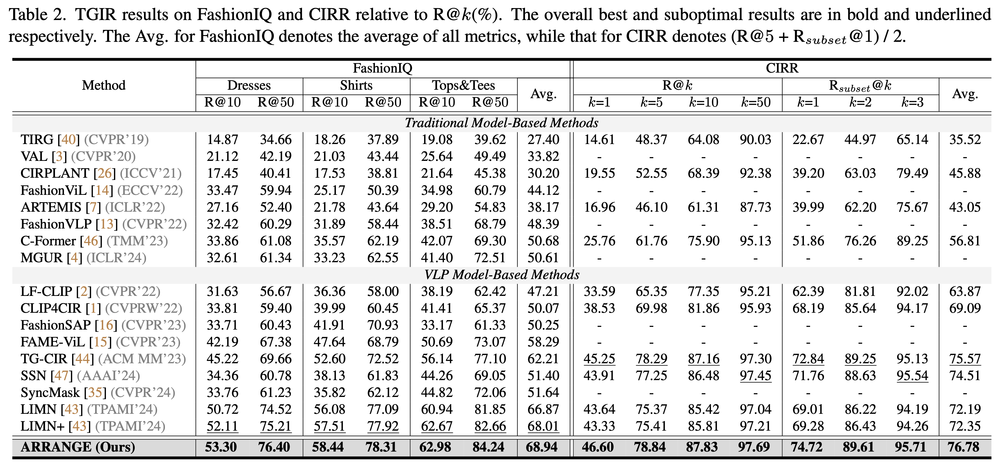
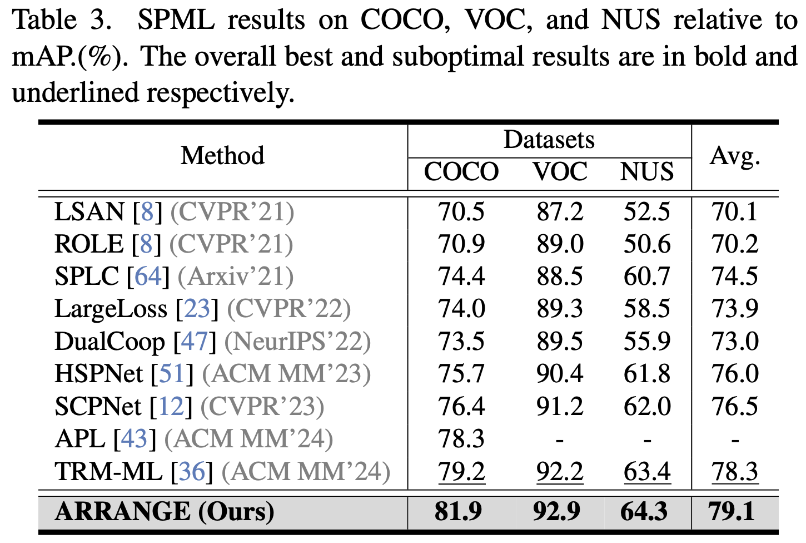
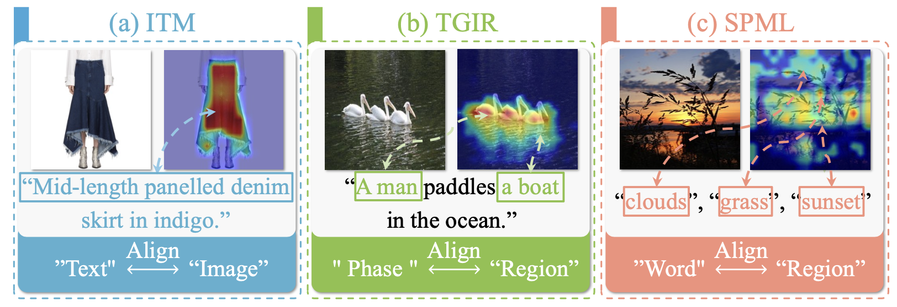

Experiment




Visual-linguistic pretraining models have been widely applied in numerous visual and linguistic (V+L) downstream tasks due to their outstanding cross-modal comprehension capabilities, and significant progress has also been made in multi-task learning models tailored for different V+L tasks. However, due to the discrepancy and comprehension difficulty of visual and textual contents in diverse domains, existing studies tend to focus on V+L multi-task learning for specific domains and neglect that for open domains. Nevertheless, this is non-trivial due to the following two challenges: 1) referring granularity discrepancy, and 2) alignment specificity. To address the above challenges, we propose a novel V+L multi-task learning approach (ARRANGE) that can accommodate both specific-domain and open-domain scenarios. Compared to existing methods, ARRANGE employs a unified model to handle multiple heterogeneous V+L tasks and thus exhibits high parameter efficiency and domain generalization. ARRANGE generates referring tokens through unified referring embedding and learns the alignment specificity of individual tasks to adaptively align visual and textual referring. Extensive experiments on six benchmark datasets (covering both specific and open domains) for three V+L tasks show that our proposed ARRANGE significantly outperforms previous specific-domain-oriented V+L multi-task learning methods and surpasses traditional single-task models.